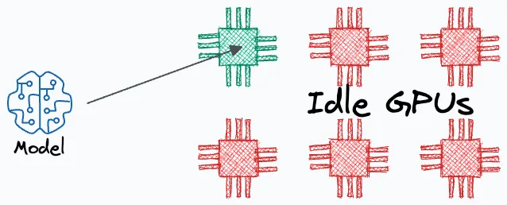
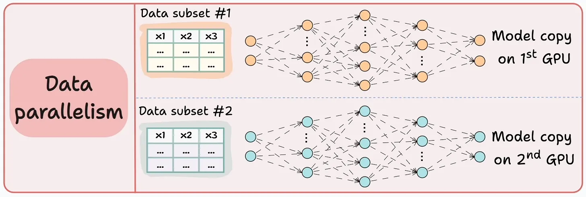
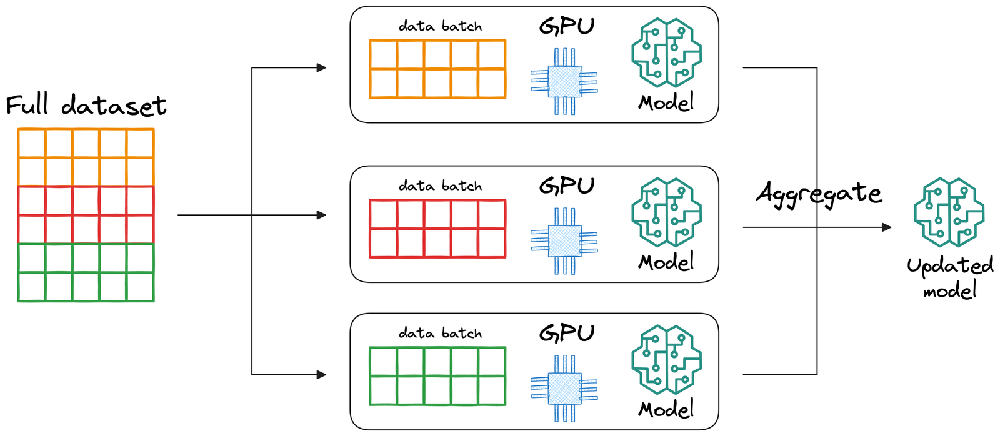
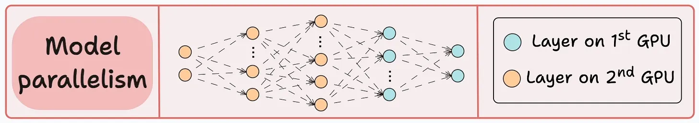

Multi-GPU training provides accelerated computing power, meaning faster training once set up correctly. This is necessary when having bigger datasets and larger models.
2. Multi-GPU training/
├── config/
│ ├── config.yaml
│ └── cli_config.yaml
├── output/
├── src/
│ ├── data/
│ │ ├── __pycache__/
│ │ ├── lightning_datamodule.py
│ │ └── pytorch_dataset.py
│ └── model/
│ ├── __pycache__/
│ ├── lightning_module.py
│ ├── pytorch_model.py
│ ├── pytorch_encoder.py
│ └── pytorch_decoder.py
├── tests/
│ ├── __pycache__/
│ └── test_lightning_parameters.py
├── __pycache__/
├── lightning_train.py
├── lightning_trainer.py
└── requirements.txt
By default, pytorch deep learning models only utilize a single GPU for training, even if multiple GPUs are available. This of course is not what we want. Multi-GPU training setup for pytorch itself can be quite a pain, which is why we are going to use (Pytorch) Lightning. This is very useful and saves you a lot of work down the line (not just multi-GPU training), you'll see.

When your expensive GPUs sit idle while only one is working, you're wasting resources and time.
For multi-GPU training, there are a few strategies that can be used to train models. I will list a few below:
(Distributed) Data Paralel
Replicate the model across all GPUs. Divide the input data into smaller subsets, and assign each subset to a different GPU. The data is only shuffled within the subset, not across the subsets. Each GPU processes its batch independently by running a forward and backward pass using its own model replica. After the backward pass, the gradients from all GPUs are synchronized and averaged. These averaged gradients are then used to update the model parameters consistently across all replicas. This strategy is commonly used because it's relatively straightforward and scales well across multiple GPUs.


Data Parallel training splits the data across GPUs, with each GPU processing a different batch of data.
Model paralel
In model parallelism, different parts of the model are placed on different GPUs. For example, GPU 0 might hold the encoder, while GPU 1 holds the decoder. This approach is primarily used when the model is too large to fit into the memory of a single GPU, which is typically the case for models with billions of parameters. Unlike data parallelism where each GPU maintains a full model replica, model parallelism distributes the model across GPUs with each GPU holding only a portion of the model. During training, data (activations) must flow between GPUs during both forward and backward passes, which can introduce potential communication bottlenecks. This strategy is more complex to implement and debug and is usually reserved for advanced scenarios like training large-scale transformers (e.g., GPT-style models).

Model Parallel training splits the model across GPUs, with each GPU handling different layers of the network.
Another strategy is to use a combination of data parallelism and model parallelism: pipeline parallelism. This is not typically needed for standard model training and is not recommended for now unless working with very large architectures.
In short: (Pytorch) Lightning is a wrapper around pytorch that can automatically handle multi-gpu communication along with a lot more nice stuff. The key benefit is that Lightning handles all the complexity while still allowing you to customize any part if needed. You get production-ready features without writing boilerplate code, and your code remains clean and focused on the model architecture and training logic. I deeply encourage you to start using this as it will save you a lot of time and effort down the line (In the Appendix, I'll state the advantages of this Lightning so you understand why it is so nice), I will now walk you through how to use lightning:
How to go from pytorch to (pytorch) lightning
This is actually quite easy. Note that in the previous chapter I named all of my components files pytorch_*.py. This was chosen deliberately, because now I can show you that you just have to add some lightning_*.py files to make full use of lightning's benefits. Examples of these can be found in the src folder.
uv run python -m unittest tests/test_lightning_parameters.py
uv run python lightning_train.py
config.yaml (example in cli_config.yaml) with specific config sections:Run the following commands to see how to use the CLI: (note that you can switch between fit, validate, test, predict)
uv run python -m lightning_trainer --help
uv run python -m lightning_trainer fit --help
uv run python -m lightning_trainer fit -c config/cli_config.yaml
Additional information on how to use the Lightning CLI is available in the Lightning CLI Documentation
When transitioning from single-GPU to multi-GPU training, you need to carefully consider how processes interact with shared resources. This is a critical aspect that can cause subtle bugs if not handled properly.
Single-GPU Training:
Multi-GPU Training:
When training with multiple GPUs, proper coordination of file operations is critical. In pytorch_dataset.py you can see how to implement distributed file downloads correctly:
dist.barrier() synchronizes all processes (meaning the other processes have to wait before the main process finishes)def is_main_process():
"""Check if the current process is the main process."""
return not dist.is_available() or not dist.is_initialized() or dist.get_rank() == 0
def download_dummy_data():
"""Download the dummy data, only on the main process."""
should_download = is_main_process()
if should_download:
# Only process with rank 0 performs the download
print("Main process downloading data...")
# Actual download code here
# Synchronization point - all processes must wait here
# Until the main process has finished downloading.
if dist.is_available() and dist.is_initialized():
dist.barrier()
When training is complete, uploading checkpoints and logs requires similar coordination to prevent conflicts. In lightning_trainer.py and lightning_train.py you can see how to implement distributed file uploads correctly:
def is_main_process():
"""Check if the current process is the main process."""
return not dist.is_available() or not dist.is_initialized() or dist.get_rank() == 0
def upload_checkpoints_to_cloud(checkpoint_dir, log_dir):
"""Upload checkpoints and logs to cloud storage, only from the main process."""
# Only process with rank 0 performs the upload
if is_main_process():
# Upload files
print("Upload complete!")
Seeding in Pytorch Lightning
When using PyTorch Lightning's seed_everything(), it's important to note that by default, the seed is (as far as I have tested) not automatically propagated to worker processes or DataLoader generators. Setting workers=True in seed_everything() ensures the seed is properly propagated to worker processes, but you still need to explicitly set seeds for DataLoader generators. As far as I have tested (please correct me if I am wrong), in the CLI config you cannot specify workers=True, which is why I also made a custom worker_init_fn as an example. All of this can be seen in lightning_datamodule.py. It ensures reproducibility across all components of your Lightning pipeline.
Monitoring Multi-GPU Training
When training with multiple GPUs, it's essential to verify that the learning behavior matches expectations. Here's how to effectively monitor multi-GPU training:
Use a Logging Framework: Tools like Weights & Biases (WandB), TensorBoard, or MLflow provide visualizations of training metrics across runs.
Run Controlled Experiments: Compare identical configurations between single-GPU and multi-GPU runs for a fixed number of epochs to identify any discrepancies.
Hardware Configuration Verification: My implementation includes a configuration check in lightning_trainer.py that prints the actual hardware setup being used:
print(f"\nTraining Configuration Check:")
print(f"- Accelerator: {trainer.accelerator}")
print(f"- Devices: {trainer.device_ids}")
print(f"- Strategy: {trainer.strategy}\n")
Common Causes of Performance Differences
When comparing single-GPU to multi-GPU training, several factors can cause differences in results:
Effective Batch Size: In data parallel training, the batch size is effectively multiplied by the number of GPUs in your node (or number of GPU's per node * number of nodes). With 4 GPUs and a batch size of 32, your effective batch size becomes 128, which affects:
Learning Rate Scaling: You typically need to scale the learning rate linearly with the batch size (the "linear scaling rule"). For example, when moving from 1 to 4 GPUs, consider increasing your learning rate by 4x.
Learning Rate Schedulers: With fewer steps per epoch in multi-GPU training, schedulers need adjustment:
Recalculate total_steps for step-based schedulers
Adjust warm up periods proportionally to the effective batch size
Gradient Synchronization: Different synchronization strategies can affect weight updates and convergence patterns.
Hardware Configuration: Always explicitly set strategy, accelerator, and devices parameters rather than relying on "auto" settings to ensure consistent behavior across environments.
uv run python lightning_train.py
Great! now we can train with multiple GPUs, let's tackle working with bigger data in the cloud